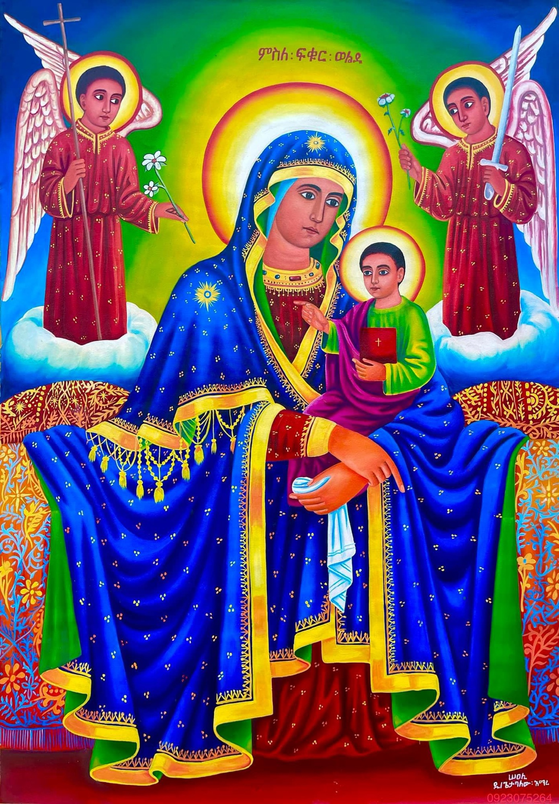
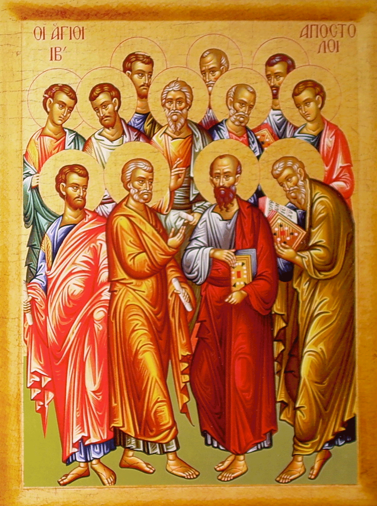
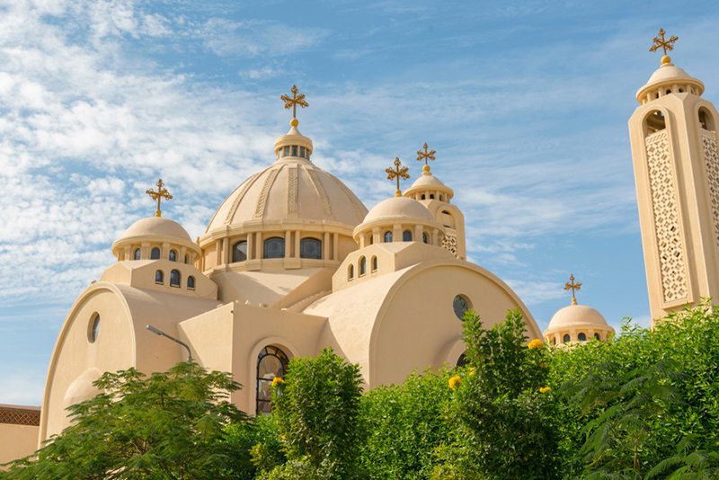

The Oriental Orthodox Church is one of the oldest branches of Christianity, worshiping the one true God in the Holy Trinity—the Father, the Son (Jesus Christ), and the Holy Spirit. At the heart of their faith is the belief that Jesus Christ, the Son of God, became fully human and fully divine for the salvation of the world.
Worship is centered on the Divine Liturgy, where believers receive the sacraments, especially the Holy Eucharist, and unite themselves with Christ through prayer, fasting, and the life of the Church.

The Church also honors the holy fathers and mothers—apostles, martyrs, prophets, monks, nuns, and righteous saints—who lived holy lives and are now in heaven with Christ. They are not worshiped, but deeply venerated as examples of faith and holiness. Because they are alive in Christ, the faithful ask for their intercession, just as one might ask a friend to pray for them. The saints’ prayers, offered through Christ, strengthen believers and point them back to God. Among them, the Virgin Mary holds the highest honor as the Mother of God (Theotokos), followed by beloved saints such as St. George, St. Michael the Archangel, St. Tekle Haymanot, and the great church fathers like St. Athanasius and St. Cyril.
In this way, the Oriental Orthodox Church lives out the unity of the whole family of God—those on earth and those in heaven. Worship is always directed to God alone, but the prayers of the saints surround the faithful like a “cloud of witnesses” (Hebrews 12:1), encouraging them to persevere in holiness. Through the Holy Trinity, the sacraments, and the intercessions of the holy ones, the Church teaches that believers are never alone but always supported in their journey toward salvation.

The Oriental Orthodox Church isn't one single church, but rather a family of ancient Christian churches that share the same faith and are united in communion with each other. They are called Oriental Orthodox to distinguish them from the Eastern Orthodox Church (like the Greek or Russian Orthodox).
key moment was the Council of Chalcedon (451 AD), where there was a disagreement about how to describe the nature of Christ.
The Oriental Orthodox churches rejected the Chalcedonian definition (which taught that Christ is in two natures, divine and human, where he was just a human alone and at some point he was just God alone) and instead held to what is called Miaphysitism — the belief that Christ's divinity and humanity are united in one nature without separation, confusion, or division.

There are 5 churches in the Oriental Orthodox Church and they are; The Coptic Orthdox Church of Alexandria (Egypt)
The Ethiopian and Eritrean Tewahedo Orthodox Church
The Syriac Orthodox Church of Antioch
The Armenian Apostolic Orthodox Church
The Malankara Orthodox syrian Church (Indian).
These are the Churchs that took the belief that followed the teaching of the Apostles who were thought by the Crist himself.
If you have any quetion about this Church please come to DEBRE MHRET KIDUS MICHAEL EOTC on sunday from 7-11